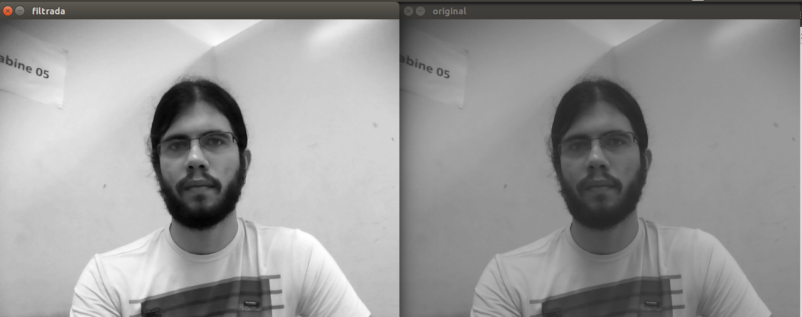
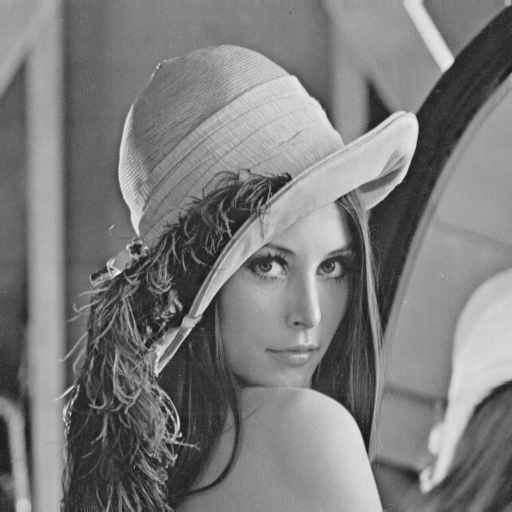

Processamento Digital de Imagens - Segunda unidade Aluno: Tiago Batista Silva Sousa
Introdução
Na segunda unidade da disciplina de Processamento Digital de Imagens foi requisitada a implementação de filtragem homomórfica e aplicação de pontilhismo com detecção de bordas de Canny.
Desenvolvimento
Abaixo estão os algoritmos desenvolvidos para a segunda unidade da disciplina de PDI, ministrada pelo Prof. Agostinho Brito Jr.
Filtragem Homomórfica
Proposta:
O algoritmo proposto deve capturar imagens da câmera e realizar a filtragem frequêncial homomórfica dos frames capturados em tempo real. O código implementado pode ser acessado aqui.
Implementação
As técnicas de filtragem em frequência são utilizadas para alterar padrões da imagem que ocorrem em certas faixas de frequência. Esta análise é feita em geral através da transformada discreta de Fourier. Essa transformada tem uma propriedade muito importante: a linearidade, ou seja, a transformada da soma de duas funções é igual à soma das trasnformadas de cada uma das funções separadamente, o que não acontece para o produto. Nesse exercício, devemos separar a imagem capturada nas suas componentes de iluminância(baixas frequências) e reflectância(altas frequências): i(x,y) e r(x,y). Para tomarmos proveito da propriedade de linearidade, devemos tomar o logarítmo da imagem(log(a*b) = log(a) + log(b)), e então aplicar a filtragem nesse logarítmo. Nota: é importante somar 1 ao valor de todos os píxels da imagem, pois log(0) não existe.
Resultado:

Figura 1: Exemplo de frame capturado original(à direita) e processado(à esquerda) pelo algoritmo homo.cpp
Pontilhismo
Proposta:
O algoritmo proposto abre uma imagem, converte-a para grayscale e após a aplicação do algorítmo de Canny para detecção de bordas, realiza o pontilhismo. O código implementado pode ser acessado aqui.
Desenvolvimento:
No programa pont.cpp foi utilizada a função Canny(que implementa o algorítmo de Canny para a detecção de bordas em uma imagens) para diferentes valores de v, que variam dentro do primeiro for. O segundo e terceiro for mapea a imagem por completo e testa se o ponto (x,y) atual está acima do limiar adotado(250). Nota: por padrão, o algoritmo de Canny retorna uma imagem com o fundo preto e as bordas da imagem de entrada branca. Para não comparar com exatamente 255, adotaremos um limiar de 250.
Para a realização do pontilhismo mais eficiente, a imagem de entrada é introduzida como plano de fundo, e os loops vão superpondo os resultados ao fundo.

Figura 2: à esquerda temos a imagem original, à direita a imagem após ser processada pelo algoritmo